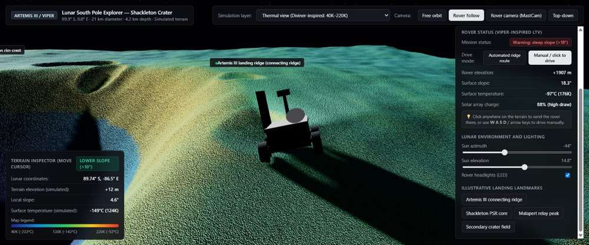
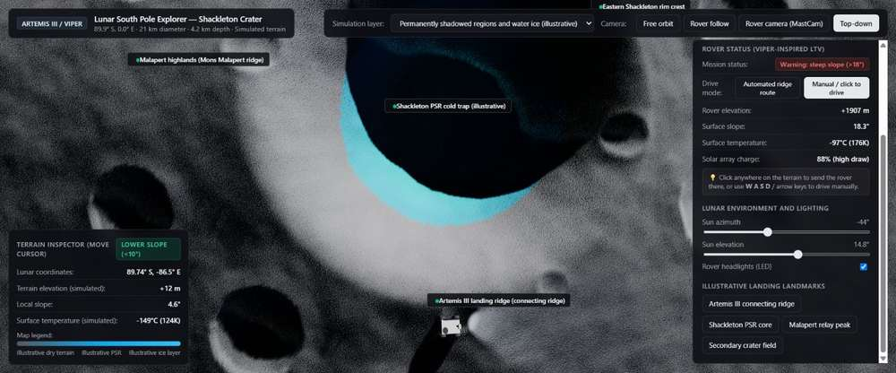
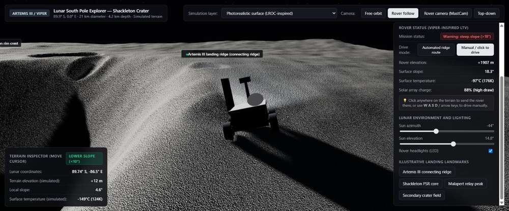
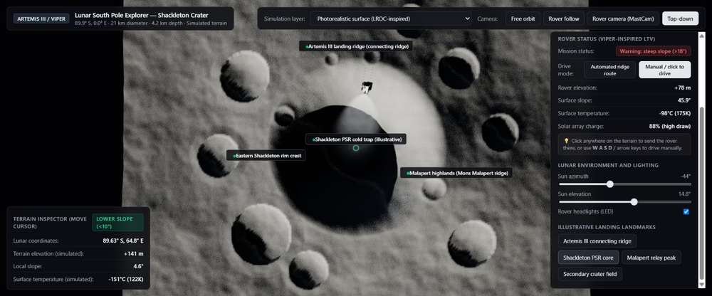
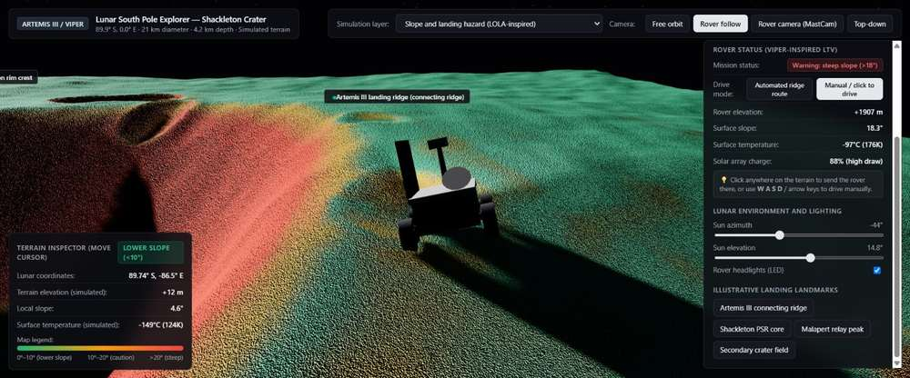
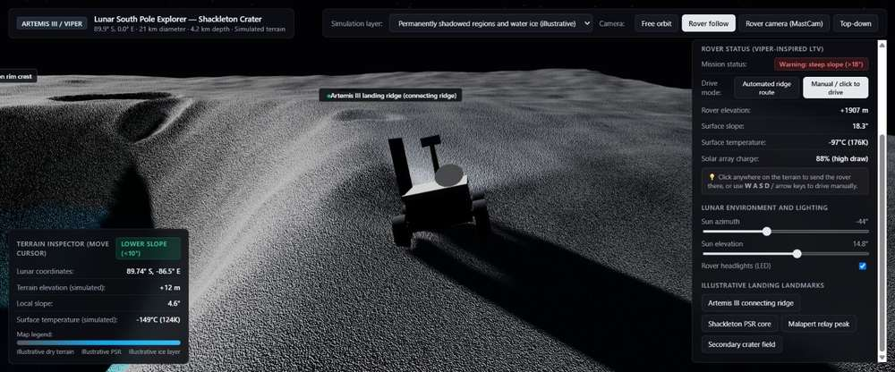
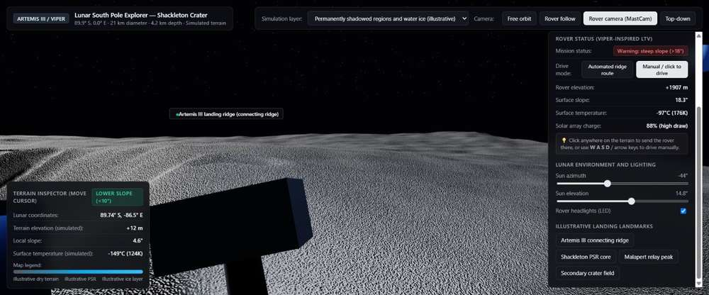

Thermal view
Color ramp communicates modeled temperature.
An interactive Shackleton Crater exploration prototype
Low Sun angles and crater walls shape power opportunities.
Local horizons can interrupt direct-to-Earth communication.
Slope, shadows and access affect how a crew or rover explores.

Compare sites and dates by showing where the Sun and Earth sit relative to the local horizon. Full site/date window comparison is a next step.

Orbit the landscape, follow the rover, or inspect it from above. Candidate landmarks remain visible in the scene.
Move over the scene to inspect modeled coordinates, elevation, slope and estimated temperature. These values are illustrative in the current 3D simulator.

1. Choose a landmark: connecting ridge, PSR core, Malapert peak or crater field.
2. Pick a drive mode: automated ridge loop or click-to-drive manual control.
3. Inspect rover position and local modeled conditions.
Free orbit · Rover follow · Rover camera · Top-down

Color ramp communicates modeled temperature.

Highlights lower and steeper terrain.

Marks illustrative PSR and ice areas.
Layer colors and derived metrics are illustrative in the current 3D scene; they are not measured NASA Diviner or LOLA values.
The companion data view fetches the Site01 5 m/pixel LOLA GeoTIFF from Product 78, then surfaces image metadata, elevation samples, statistics and a SHA-256 digest.
Requests hourly Sun and Earth ephemeris rows for a chosen lunar observer point and time window.
The 3D view is a separate interactive model. Its elevation, heat and ice layers are calculated or illustrated in code; the scene does not yet sample live LOLA GeoTIFF or Diviner products.
The challenge asks for Sun/Earth visibility relative to local horizons. Verified data integration into the 3D scene remains future work.

01 · Load verified LOLA terrain into the 3D mesh.
02 · Connect NASA polar illumination products and dated Sun/Earth positions.
03 · Compare sunlight and Earth visibility by site and date, with clear provenance.